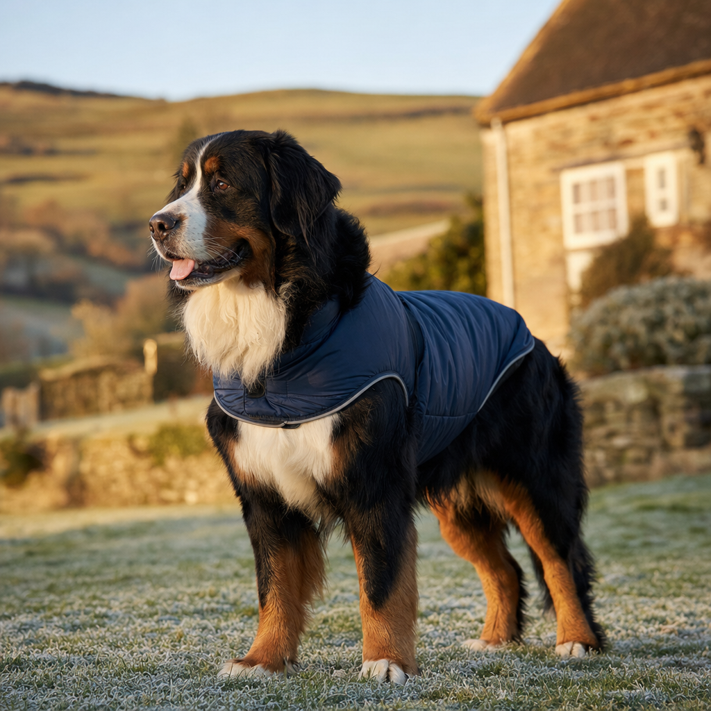

Best Winter Coats for Dogs UK 2026: Waterproof & Warm Jackets
Contents
- Why Do Dogs Need Winter Coats in the UK?
- How to Measure Your Dog for a Winter Coat
- Waterproof vs Water-Resistant Dog Coats: Which Should You Buy?
- Best Winter Coats for Small Dogs
- Best Winter Coats for Medium and Large Dogs
- Insulated and Fleece-Lined Options: Are They Worth It?
- Winter Coat Care and Maintenance: How Do You Keep a Dog Coat in Good Condition?
- Signs Your Dog Needs a Winter Coat: How Can You Tell?
- Budget vs Premium Winter Dog Coats: Is It Worth Spending More?
- Frequently Asked Questions
This article contains affiliate links. We may earn a small commission if you make a purchase, at no extra cost to you.
The best winter coats for dogs in the UK are waterproof or water-resistant outer shells with an insulating fleece or padded lining, designed to keep your dog dry and warm during cold, wet British winters. Not every dog needs one, but short-haired, slim, elderly, and small breeds often genuinely benefit from extra coverage once temperatures drop below around 7°C. According to the Blue Cross, dogs with thin coats, low body fat, or health conditions can struggle to regulate their body temperature in cold, wet weather, and a well-fitted coat can make a real difference to their comfort and willingness to exercise.
In this guide, we have rounded up the best dog winter jackets available in the UK in 2026, covering options for every size, budget, and breed type. Whether you have a shivering Whippet like our beloved Willow or a sturdy Bernese Mountain Dog like Bear who barely notices the cold, we have got something to help you decide.
Why Do Dogs Need Winter Coats in the UK?
Not all dogs need a coat, but many do benefit from one during British winters, particularly between November and March when temperatures regularly fall between 2°C and 8°C across much of England, Scotland, and Wales. Dogs that tend to need extra warmth include those with short, single-layer coats (such as Greyhounds, Whippets, Miniature Pinschers, and Chihuahuas), small breeds that lose heat rapidly due to their size-to-surface-area ratio, puppies, senior dogs, and dogs recovering from illness or surgery.
According to Loyal & Loved, the UK's damp cold is often more of a problem than dry cold, because wet fur loses its insulating ability quickly. A waterproof outer layer keeps the coat beneath dry and functional. The PDSA advises that dogs should not be left shivering outdoors and that owners should take steps to keep vulnerable dogs comfortable in cold weather.
Double-coated, working, or Nordic breeds such as Huskies, Border Collies, and German Shepherds generally do not need coats and may actually overheat if one is added. Loyal & Loved found that many owners of these breeds buy coats unnecessarily, so it is always worth considering your dog's natural insulation before purchasing. For more on how temperature affects your dog's walks, see our dog walking temperature guide.
How to Measure Your Dog for a Winter Coat
Getting the right fit is the single most important step when buying a dog winter jacket, because a coat that rubs, restricts movement, or falls off is worse than useless. You will need a soft tape measure and ideally a second pair of hands to hold your dog still.
Take three key measurements:
- Back length: From the base of the neck (where the collar sits) to the base of the tail. This is the most important measurement for sizing.
- Chest girth: The circumference of the widest part of the chest, just behind the front legs. This is crucial for comfort and preventing chafing.
- Neck girth: The circumference around the neck where the collar sits. Leave two fingers' width of room.
As Loyal & Loved explains, manufacturers across the UK use very different sizing conventions, so always check the individual brand's size chart rather than relying on generic labels like "small" or "medium". A Cocker Spaniel and a French Bulldog may both be labelled medium, but their proportions are entirely different. If your dog falls between sizes, size up for comfort and check whether the coat has adjustable straps or Velcro fastenings to customise the fit.
| Measurement | How to Take It | Why It Matters |
|---|---|---|
| Back length | Collar base to tail base | Primary sizing reference |
| Chest girth | Widest point behind front legs | Prevents chafing and restriction |
| Neck girth | Around the collar line | Ensures coat sits correctly |
Waterproof vs Water-Resistant Dog Coats: Which Should You Buy?
Waterproof and water-resistant are not the same thing, and the distinction matters enormously in the UK, where rain is frequent and persistent. A water-resistant coat (sometimes called "shower-proof") has a surface treatment, usually a DWR (durable water repellent) coating, that causes light rain to bead and roll off. It will keep your dog dry in a brief shower but will soak through in prolonged or heavy rain. A waterproof coat uses a fully sealed or laminated membrane fabric, comparable to a human Gore-Tex style jacket, that prevents water penetrating entirely.
According to Loyal & Loved, for most UK dog owners walking in autumn and winter, a fully waterproof coat is worth the extra cost. You can find decent waterproof dog coats from around £20 to £25 at the budget end, rising to £80 to £120 for premium options with taped seams and high-quality linings.
It is also worth noting that "windproof" is a separate feature entirely. Some coats offer wind protection through tightly woven outer fabrics, which is particularly useful in exposed coastal or highland areas of the UK.
| Feature | Water-Resistant | Waterproof |
|---|---|---|
| Suitable for light drizzle | Yes | Yes |
| Suitable for heavy rain | No | Yes |
| Typical UK price range | £10 to £35 | £20 to £120 |
| Weight | Lighter | Slightly heavier |
| Breathability | Generally better | Varies by brand |
Best Winter Coats for Small Dogs
Small dogs such as Chihuahuas, Miniature Dachshunds, Yorkshire Terriers, and Toy Poodles are among the most likely to genuinely need a warm dog coat for winter, because their smaller body mass means they lose heat faster. Mabel the Cockapoo, for instance, is all enthusiasm until the January wind hits, at which point a decent coat makes a real difference to how long she will happily stay out.
1. Ruffwear Overcoat Fuse (from approx. £85)
The Ruffwear Overcoat Fuse is a premium harness-integrated jacket, meaning the coat attaches directly to your dog's harness with no separate fitting required. It is made from a waterproof outer shell with a warm fleece lining, and it covers the chest and belly as well as the back, which is important for small breeds who lose heat from their underside. Available in sizes XS to XL, it is well suited to small breeds in the 4kg to 10kg range. Check the current price on Amazon UK. The main downside is the price; it is a significant investment, though the build quality justifies it for frequent walkers.
2. Barbour Monmouth Waterproof Dog Coat (approx. £45 to £55)
The Barbour Monmouth is a British icon and one of the most recognisable dog coats on the market. It features a waxed cotton outer that is genuinely waterproof, with an insulated lining and a classic tartan trim. It comes in several sizes, including extra-small for very small dogs. The fit is traditional and roomy across the back. See current sizing and price on Amazon UK. It is worth noting that the waxed cotton requires occasional re-waxing to maintain waterproofing, which adds a small maintenance cost over time.
3. Ancol Stormguard Dog Coat (approx. £18 to £28)
The Ancol Stormguard is a solid budget pick for small dogs, with a waterproof polyester outer, a fleece lining, and a reflective strip for visibility on dark winter walks. It fastens with Velcro straps underneath the belly, which works well for small, narrow-chested dogs. Check the Ancol Stormguard on Amazon UK. It is not the most stylish option, but it is practical, washable, and well-priced for owners who just need something functional.
Best Winter Coats for Medium and Large Dogs
Medium and large breeds that need a winter coat, including Greyhounds, Lurchers, Vizslas, Weimaraners, and older Labradors, can be trickier to fit because of their varying proportions. Deep-chested breeds in particular need coats with a generous belly coverage and a secure fastening system.
4. Hurtta Expedition Parka (approx. £75 to £100)
The Hurtta Expedition Parka from Finland is widely regarded by experienced dog owners as one of the best all-round winter dog jackets available in the UK. It features a fully waterproof and windproof outer shell, a high-loft insulating layer rated for temperatures down to minus 30°C (though British winters rarely demand that), and an adjustable fit system that accommodates deep-chested breeds. It comes in sizes 35 to 85 (measured in centimetres of back length), making it genuinely usable for most medium to large breeds. View Hurtta Expedition Parka sizing on Amazon UK. The only real drawback is the price point, which puts it firmly in the premium category.
5. RC Pet Products Whistler Winter Dog Coat (approx. £35 to £50)
The RC Pet Products Whistler is a well-designed mid-range option with a waterproof outer, a Sherpa fleece lining, and a clever leash access hole that means you do not need to remove the coat to clip a lead. It is particularly well suited to Labrador and Spaniel-type proportions. Check the RC Pet Whistler on Amazon UK. Some owners of very deep-chested breeds like Greyhounds report that the belly coverage is not quite generous enough, so measure carefully.
6. Outhwaites Waterproof Dog Coat (approx. £22 to £38)
British brand Outhwaites produces a no-frills waterproof coat that has built a loyal following among working dog owners. It is made from a durable waterproof nylon and features a full belly strap and a D-ring for lead attachment. It is a practical, hardwearing option for large breeds that need something that can take a bit of punishment. See Outhwaites coats on Amazon UK.
Insulated and Fleece-Lined Options: Are They Worth It?
Fleece-lined and padded insulated coats offer warmth beyond what a simple shell coat can provide, making them particularly suitable for very cold days, elderly dogs, post-operative dogs, and breeds with very little body fat. However, they are not always the best choice for active dogs on wet walks, because the lining can retain moisture if the outer shell is not fully waterproof.
7. Equafleece Dog Suit (approx. £30 to £45)
The Equafleece Dog Suit is a full-body fleece garment made in the UK, originally designed for Greyhounds and Lurchers but now available in a wide range of sizes. It is not waterproof, so it is best used under a waterproof shell coat or on dry but cold days. The stretch fleece is remarkably effective at retaining body heat, and the suit dries quickly after washing. Many veterinary practices recommend Equafleece specifically for post-operative dogs and thin-skinned sighthounds. View Equafleece sizing on Amazon UK.
8. Ruffwear Cloud Chaser Softshell Jacket (approx. £60 to £75)
The Ruffwear Cloud Chaser is a softshell jacket, meaning it has a stretchy, wind-resistant outer and a fleece lining rather than a hard-shell waterproof membrane. It is an excellent option for cold but dry days, or for active dogs who generate enough body heat that a full waterproof feels too warm. It is water-resistant but not waterproof, so keep that distinction in mind for heavy British rain. Check the Ruffwear Cloud Chaser on Amazon UK.
For winter care considerations specific to older dogs, including how to keep them warm and comfortable in cold weather, see our guide to winter care for senior dogs.
Winter Coat Care and Maintenance: How Do You Keep a Dog Coat in Good Condition?
A well-maintained dog coat will last several winters; a neglected one may lose its waterproofing or develop unpleasant smells within a single season. The key steps are consistent cleaning and periodic waterproofing treatment.
- Wash regularly: Most dog coats should be washed every two to four weeks during heavy use, or whenever visibly muddy. Use a specialist outdoor garment cleaner such as Nikwax Tech Wash rather than standard detergent, as conventional detergents strip the DWR coating that makes the outer shell water-repellent. Nikwax Tech Wash is available on Amazon UK.
- Re-proof regularly: After every two to three washes, apply a DWR re-proofing spray such as Nikwax TX.Direct to restore water-beading performance. This is especially important for coats that have been heavily used or washed frequently.
- Dry properly: Never tumble-dry a coat unless the label specifically permits it. Hang to dry in a well-ventilated area, turning inside-out to dry the lining thoroughly. A damp lining is a source of bacteria and odour.
- Store correctly: At the end of winter, clean the coat before storing. Store in a breathable bag rather than a sealed plastic bag, which can encourage mildew.
- Check for wear: Inspect Velcro fastenings, stitching, and any reflective strips regularly. Worn Velcro loses its grip and may allow the coat to slip, which is a safety concern on busy roads.
For winter walks in low light, it is also sensible to pair a reflective or high-visibility coat with additional reflective dog gear for winter walks, particularly in areas without street lighting.
Signs Your Dog Needs a Winter Coat: How Can You Tell?
Your dog cannot ask you to put their coat on, so it is important to know what to look for. According to the RSPCA, shivering is the most obvious sign that a dog is too cold, but there are several subtler cues that owners often miss.
- Shivering or trembling during or after walks, even when moving.
- Reluctance to go outdoors in cold weather, or attempting to turn back home shortly after leaving.
- Hunching or tucking the tail tightly between the legs in cold conditions.
- Lifting paws frequently, which may indicate cold or icy ground discomfort (though paw wax or boots address this separately).
- Seeking warmth constantly after returning indoors, pressing against radiators or burrowing under blankets.
- Slowing down or stiffening on walks, which in older dogs may be a sign that cold is exacerbating joint stiffness related to arthritis.
As Loyal & Loved explains, if your dog shows two or more of these signs consistently in cold weather, a coat is likely to help. Consult your vet if you are unsure, particularly if your dog is elderly, has a known health condition, or has recently had surgery.
Frequently Asked Questions
What is the best winter coat for a dog in the UK in 2026?
The best overall winter coat for dogs in the UK in 2026 is the Hurtta Expedition Parka for medium to large breeds, and the Ruffwear Overcoat Fuse for smaller dogs. Both offer genuine waterproofing, good insulation, and a secure, comfortable fit. For budget-conscious buyers, the Ancol Stormguard (around £18 to £28) is a reliable and practical choice that performs well in typical British winter conditions.
Do all dogs need a coat in winter?
No. Dogs with thick, double-layered coats, such as Huskies, Border Collies, Bernese Mountain Dogs, and Golden Retrievers, generally do not need a coat and may overheat if one is added. Dogs that typically benefit from a winter coat include short-haired breeds, slim breeds with low body fat (such as Greyhounds and Whippets), small breeds, puppies, senior dogs, and dogs with health conditions. The Blue Cross advises assessing your individual dog's comfort rather than applying a blanket rule based on breed alone.
How do I know if a dog coat fits properly?
A well-fitting dog coat should cover the back from the base of the neck to the base of the tail, sit snugly but not tightly around the chest, and allow full freedom of movement in all four legs. You should be able to slide two fingers comfortably under any strap or fastening. The coat should not ride up, slip to one side, or restrict your dog's natural gait. Always take your dog's back length and chest girth measurements and cross-reference them with the specific brand's size chart before buying.
Can I wash a dog's winter coat in a washing machine?
Most dog winter coats can be machine washed on a gentle cycle (30°C is usually recommended), but you should always check the care label first. Use a specialist outdoor garment cleaner such as Nikwax Tech Wash rather than standard laundry detergent, which can degrade the waterproof DWR coating. After washing, re-apply a DWR reproofing product like Nikwax TX.Direct every two to three washes to maintain water-repellency. Never tumble-dry unless the manufacturer explicitly states it is safe to do so.
How much should I spend on a dog winter coat in the UK?
For a dog that walks daily in British winter weather, we recommend budgeting at least £35 to £50 for a mid-range coat that will offer reliable waterproofing and last two to three seasons. Premium coats from brands like Hurtta and Ruffwear cost £75 to £120 but typically last four or more seasons, making the cost per year comparable. If your dog only needs occasional extra warmth, a budget option in the £18 to £30 range, such as the Ancol Stormguard, is perfectly adequate. Browse dog winter coats on Amazon UK to compare current prices and availability.